|
Magnetic Materials in 3D |

  
|
|
Magnetic Materials in 3D |
|
In magnetic materials, we can modify the definition of  to include magnetization and write
to include magnetization and write
(2.12) 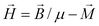
We can still apply the divergence form in cases where 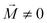, but we must treat the magnetization terms specially.
The equation becomes:
(2.13) 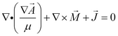
FlexPDE does not integrate constant source terms by parts, and if 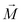 is piecewise constant the magnetization term will disappear in equation analysis. It is necessary to reformulate the magnetic term so that it can be incorporated into the divergence. We have from (2.5)
(2.14) 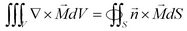.
Magnetic terms that will obey
(2.15) 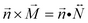
can be formed by defining 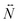 as the antisymmetric dyadic
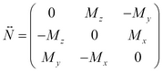
Using this relation, we can write eq. (2.13) as
(2.16) 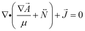
This follows because integration by parts will produce surface terms  , which are equivalent to the required surface terms 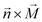.
, which are equivalent to the required surface terms 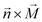.
Expanded in Cartesian coordinates, this results in the three equations
(2.17) 
where the 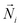 are the rows of .
In this formulation, the Natural boundary condition will be defined as the value of the normal component of the argument of the divergence, eg.
(2.18) 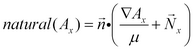.
As an example, we will compute the magnetic field in a generic magnetron. In this case, only 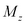is applied by the magnets, and as a result 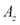will be zero. We will therefore delete from the analysis. The outer and inner magnets are in reversed orientation, so the applied is reversed in sign.
See also "Samples | Applications | Magnetism | 3D_Magnetron.pde"
Descriptor 2.3: 3D_Magnetron.pde
TITLE 'Oval Magnet'
COORDINATES
CARTESIAN3
SELECT
alias(x) = "X(cm)"
alias(y) = "Y(cm)"
alias(z) = "Z(cm)"
nodelimit = 40000
errlim=1e-4
VARIABLES
Ax,Ay { assume Az is zero! }
DEFINITIONS
MuMag=1.0 { Permeabilities: }
MuAir=1.0
MuSST=1000
MuTarget=1.0
Mu=MuAir { default to Air }
MzMag = 10000 { permanent magnet strength }
Mz = 0
Nx = vector(0,Mz,0)
Ny = vector(-Mz,0,0)
B = curl(Ax,Ay,0) { magnetic flux density }
Bxx= -dz(Ay)
Byy= dz(Ax) { "By" is a reserved word. }
Bzz= dx(Ay)-dy(Ax)
EQUATIONS
Ax: div(grad(Ax)/mu + Nx) = 0
Ay: div(grad(Ay)/mu + Ny) = 0
EXTRUSION
SURFACE "Boundary Bottom" Z=-5
SURFACE "Magnet Plate Bottom" Z=0
LAYER "Magnet Plate"
SURFACE "Magnet Plate Top" Z=1
LAYER "Magnet"
SURFACE "Magnet Top" Z=2
SURFACE "Boundary Top" Z=8
BOUNDARIES
Surface "boundary bottom"
value (Ax)=0 value(Ay)=0
Surface "boundary top"
value (Ax)=0 value(Ay)=0
REGION 1 { Air bounded by conductive box }
START (20,-10)
value(Ax)=0 value(Ay)=0
arc(center=20,0) angle=180
Line TO (-20,10)
arc(center=-20,0) angle=180
LINE TO CLOSE
REGION 2 { Magnet Plate Perimeter and outer magnet }
LAYER "Magnet Plate"
Mu=MuSST
LAYER "Magnet"
Mu=MuMag
Mz=MzMag
START (20,-8)
arc(center=20,0) angle=180
Line TO (-20,8)
arc(center=-20,0) angle=180
LINE TO CLOSE
REGION 3 { Air }
LAYER "Magnet Plate"
Mu=MuSST
START (20,-6)
arc(center=20,0) angle=180
Line TO (-20,6)
arc(center=-20,0) angle=180
LINE TO CLOSE
REGION 4 { Inner Magnet }
LAYER "Magnet Plate"
Mu=MuSST
LAYER "Magnet"
Mu=MuMag
Mz=-MzMag
START (20,-2)
arc(center=20,0) angle=180
Line TO (-20,2)
arc(center=-20,0) angle=180
LINE TO CLOSE
MONITORS
grid(x,z) on y=0
grid(x,y) on z=1.01
grid(x,z) on y=1
PLOTS
grid(x,y) on z=1.01
grid(y,z) on x=0
grid(x,z) on y=0
contour(Ax) on x=0
contour(Ay) on y=0
vector(Bxx,Byy) on z=2.01 norm
vector(Byy,Bzz) on x=0 norm
vector(Bxx,Bzz) on y=4 norm
contour(magnitude(Bxx,Byy,Bzz)) on z=2.01 LOG
END
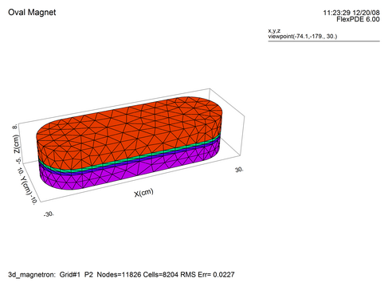
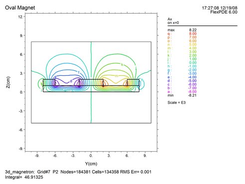
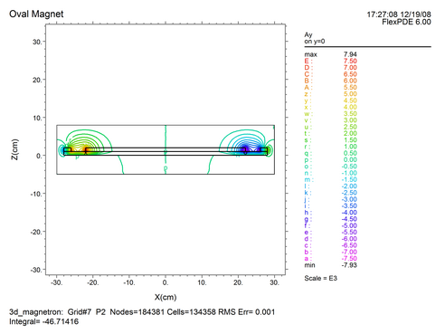
Page url: index.html?magnetic_materials_in_3d.html